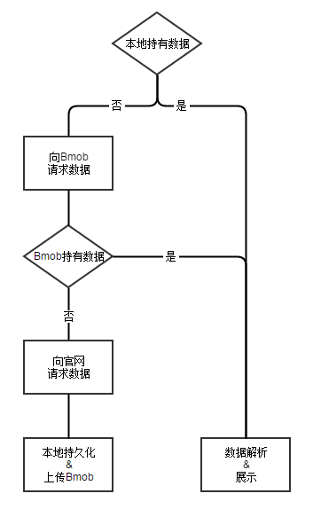
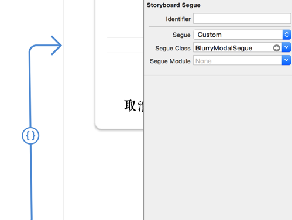

想做一款iOS应用练练手，简单考察了一下，做天气或备忘录未免太简单，太复杂的又不适合练手，最终锁定了“历史上的今天”的展示应用，会涉及到网络请求，网络图片加载，TableView，WebView等，难度适中，开整。
工具
向以下伟大的工具致敬：
StoryBoard
依然有人因为各种原因排斥使用StoryBoard，但我一贯认为解耦是必须的，有问题就解决问题，放弃使用转而手写UI是是workflow的倒退。
要点：
- autoLayout
- seque
感谢林老师的视频教程，零基础与负基础的福音。
CocoaPods
以往做游戏时接SDK的经历不堪回首，当时不知道CocoaPods的存在。漫漫血泪史，第三方工具必须提前调研。
用到的SDK：
- AFNetworking
- SDWebImage
- Bmob（这个后面细说）
Sketch
爱不释手的矢量设计软件，制作icon全靠它了。
数据
来源
在历史上的今天官网注册开发者即可得到请求权限。可以获得指定日期的历史事件列表，包含标题，简述，图片url，网页链接。每天限制请求200次，这也就产生了后面的问题。
缓存策略
访问次数限制决定了我不能完全依赖历史上的今天提供的API，最简单的解决办法是转存到自己的服务器上。但是哪有免费的服务器呢？而且还要编写服务端代码，部署环境，想想就头疼，还能不能专心写app了？有第三方帮我把这些事都做了就好了，一搜之下还真的有，伟大的云服务，最终使用了Bmob，必须打广告点赞，妈妈再也不担心服务器开发了。
最终策略如下:

美化
WebView注入javaScript
点击详情会展开webView，但是官网的页面自带了导航栏，跟native相似，但是点击这个导航栏上的返回会跳转会官网的主页，这是我不希望出现的。如果能动态修改webView页面的代码就好了。一番查找，找到了这个方法：
1 | stringByEvaluatingJavaScriptFromString:(NSString *)script |
于是就可以愉快的修改页面了:
1 | - (void)webViewDidFinishLoad:(UIWebView *)webView { |
背景模糊
欢迎使用Pods，应有尽有：BlurryModalSegue
get代码后，只需要在storyboard中选择custom，指定BlurryModalSegue即可：

看看效果吧：